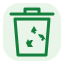

Lo que tienes puede hacer más.
Lleva el control de tu despensa y encuentra una segunda vida para cada envase.
Pequeños hábitos.
Un cambio que se nota.
Un cambio que se nota.
Your Pantry
Usa primero lo que ya tienes.
Tu lista está vacía. Añade algo para empezar.
Tu lista se guarda en este navegador.
Deja que la IA detecte lo que puedes reciclar
Sube una foto o prueba una escena. La demo ofrece ideas, pero no interpreta los píxeles.
Tu imagen aparecerá aquí

Sube o toma una foto
JPG, PNG o WebP · hasta 8 MB
La IA no está conectada en esta demo. Tus fotos no se analizan ni se envían.